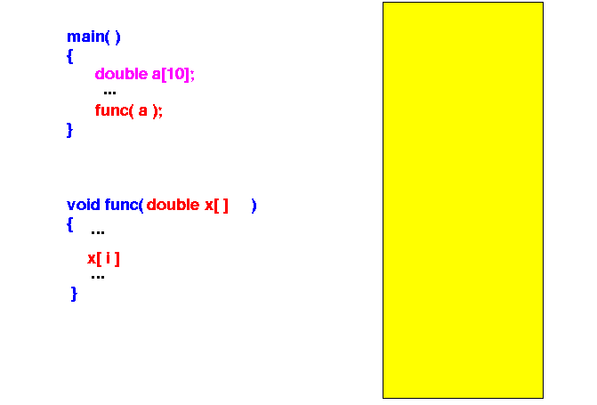
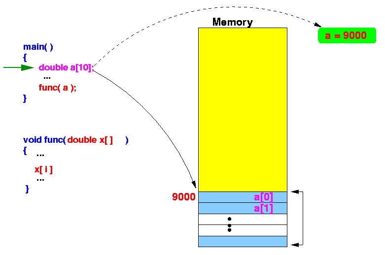
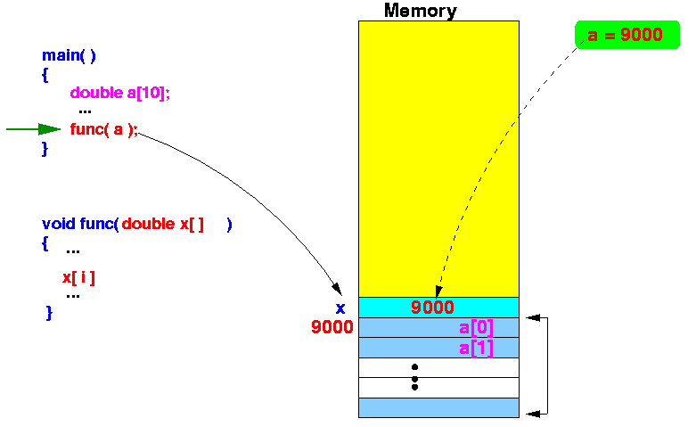
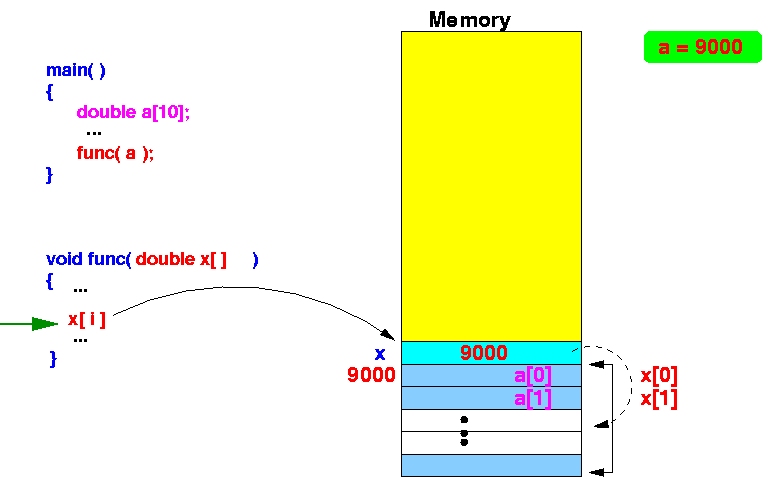

- Syntax used to
pass
an array as a
parameter to
a function:
DataType arrayName [ SIZE ]; // Defines an array FunctionName ( ...., arrayName , ... ) // Pass the array arrayName as a parameter
- Example:
int main( int argc, char* argv[] ) { double a[10]; int i; for ( i = 0; i < 10; i++ ) a[i] = i; func( a ); }
- Syntax used to define
an array as a
parameter of a function:
returnType functionName ( ...., DataType arrayName[ ] , ... ) { // function body }
- Example:
void func( double x[ ] ) { int i; for ( i = 0; i < 30; i++ ) printf( "x[%d] = %lf\n", i, x[i] ); }
- Example Program:
(Demo above code)

- Prog file: click here
How to run the program:
- Right click on link(s) and
save in a scratch directory
- To compile: gcc array-param1.c
- To run: ./a.out
- You guessed it, any text
that appears inside the
first bracket in an
array parameter variable is
ignored.
- So you can define an
array parameter variable
more nicer with this syntax:
void func( double x[10] ) { int i; for ( i = 0; i < 10; i++ ) printf( "x[%d] = %lf\n", i, x[i] ); }
- The actual way to define
an array parameter in C:
- The parameter definition
double a[ ]looks a lot like the declaration of an array variable:
extern double a[ ]
- Looks can be
deceiving !!!
- In fact, the definition:
double a[ ]is a "convenient way" to write the following definition of a pointer variable (that will be discussed later):
double* a
- The parameter definition
- So the proper way (without
using the "convenient notation") to write the function
that uses an array variable is:
void func( double* x ) { int i; for ( i = 0; i < 10; i++ ) printf( "x[%d] = %lf\n", i, x[i] ); }
- Example Program:
(Demo above code)
- Prog file: click here
How to run the program:
- Right click on link(s) and
save in a scratch directory
- To compile: gcc array-param1a.c
- To run: ./a.out
- Fact:
- Most programming languages
will not pass an
array
by value (= make a copy) because:
- Copying an entire array can be very computationally expensive
- Therefore:
- The common practice in
programming languages is to
pass an array
by reference
- I.e.: we copy the base address of an array into the parameter variable
- The common practice in
programming languages is to
pass an array
by reference
- Most programming languages
will not pass an
array
by value (= make a copy) because:
- Example showing
how
an array is passed in
C:
- Initially: the
C program starts execution in the
main() funcion

- When the array a[10] is
defined, some
memory cells are reserved and
the C compiler will
also
remember the location
of the array:

- The function call
func(a) will
create a
parameter variable x
(on the stack) and
then
passes (= copies)
the address of the array (= 9000)
into the
parameter variable:
 Notice that:
- The parameter variable
x contains an
address
(of a double typed variable) !!!
That's why officially, the data type of the parameter variable x is
double* x (double* mean: pointer or reference to a double)
The execution will now proceed inside the function func()
- The parameter variable
x contains an
address
(of a double typed variable) !!!
- When the function
func()
uses the
variable x[i],
it will obtain the
double value stored at
the address (9000 + i×8):
 The address (9000 + i×8) is the address of the variable a[i] !!!
In other words:
- Inside the function func(), the name x[i] is an alias for the name a[i] !!!
- Initially: the
C program starts execution in the
main() funcion
- Recall that
- When a variable is passed-by-reference, the function can change (modify, update) the original copy of the variable
If you need more details on this phenomenon, please study this CS170 webpage: click here
- The following program will
demonstrate that an array
is passed by reference:
void func( double x[ ] ) { x[0] = 4444; // WIll change the ORIGINAL !!! x[5] = 4444; } int main( int argc, char* argv[] ) { double a[10]; int i; for ( i = 0; i < 10; i++ ) a[i] = i; printf( "Array before the function call:\n"); for ( i = 0; i < 10; i++ ) printf( "a[%d] = %lf\n", i, a[i] ); func( a ); // Pass array printf( "\nArray AFTER the function call:\n"); for ( i = 0; i < 10; i++ ) printf( "a[%d] = %lf\n", i, a[i] ); }Result:
Array before the function call: a[0] = 0.000000 a[1] = 1.000000 a[2] = 2.000000 a[3] = 3.000000 a[4] = 4.000000 a[5] = 5.000000 a[6] = 6.000000 a[7] = 7.000000 a[8] = 8.000000 a[9] = 9.000000 Array AFTER the function call: a[0] = 4444.000000 a[1] = 1.000000 a[2] = 2.000000 a[3] = 3.000000 a[4] = 4.000000 a[5] = 4444.000000 a[6] = 6.000000 a[7] = 7.000000 a[8] = 8.000000 a[9] = 9.000000
- Example Program:
(Demo above code)
- Prog file: click here
How to run the program:
- Right click on link(s) and
save in a scratch directory
- To compile: gcc array-param2.c
- To run: ./a.out
- Functions that has a
2-dimensional array
as parameter are
defined as follows:
returnType functionName ( ..., dataType arrayName [ ] [ SIZE ] , ... ) { // function body }Example:
void func( double x[ ][5] ) { int i, j; for ( i = 0; i < 3; i++ ) { for ( j = 0; j < 5; j++ ) printf( "x[%d][%d] = %lf ", i, j, x[i][j] ); putchar('\n'); } } int main( int argc, char* argv[] ) { double a[3][5]; int i, j; for ( i = 0; i < 3; i++ ) for ( j = 0; j < 5; j++ ) a[i][j] = i + j; func( a ); }
- Example Program:
(Demo above code)
- Prog file: click here
How to run the program:
- Right click on link(s) and
save in a scratch directory
- To compile: gcc array-param3.c
- To run: ./a.out
- Note:
- Since the text in the
first dimension of an
array parameter variable is
ignored by the
C compiler,
the common practice is to
include the first dimension in the
parameter variable definition:
void func( double x[3][5] ) { int i, j; for ( i = 0; i < 3; i++ ) { for ( j = 0; j < 5; j++ ) printf( "x[%d][%d] = %lf ", i, j, x[i][j] ); putchar('\n'); } } int main( int argc, char* argv[] ) { double a[3][5]; int i, j; for ( i = 0; i < 3; i++ ) for ( j = 0; j < 5; j++ ) a[i][j] = i + j; func( a ); }
- Since the text in the
first dimension of an
array parameter variable is
ignored by the
C compiler,
the common practice is to
include the first dimension in the
parameter variable definition: